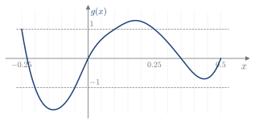

2.8 Ejercicios
Sucesiones y sus propiedades
Ejercicio 2.1
Dada la sucesión x_1=2, x_n=3x_{n-1}, escribir sus cinco primeros términos y hallar su término general.
2,\ 6,\ 18,\ 54,\ 162; x_n=2\cdot3^{n-1}.
Ejercicio 2.2
Estudiar el crecimiento y la acotación de las siguientes sucesiones:
- a_n=n^2
- a_n=-2n+1
- a_n=\dfrac{(-1)^n}{n}
- a_n=\begin{cases}n&n\text{ par}\\[2pt]\dfrac1n&n\text{ impar}\end{cases}
(a) Creciente; acotada inferiormente, no superiormente. (b) Decreciente; acotada superiormente, no inferiormente. (c) Ni creciente ni decreciente; acotada, -1\le a_n\le\frac12. (d) Ni creciente ni decreciente (a_1=1, a_2=2, a_3=\frac13); acotada inferiormente, no superiormente.
Ejercicio 2.3
Decidir si las siguientes afirmaciones son ciertas para todo k\in\mathbb{R}. Demostrar las ciertas y dar un contraejemplo de las falsas.
- Si \{x_n\} es creciente, \{k\,x_n\} es creciente.
- Si \{x_n\} está acotada, \{k\,x_n\} está acotada.
(a) Falsa: con x_n=n y k=-1, \{-n\} es decreciente. (b) Cierta: si p\le x_n\le q, entonces |x_n|\le M con M=\max\{|p|,|q|\}, y por tanto -|k|M\le k\,x_n\le|k|M.
Convergencia
Ejercicio 2.4
Sea L el límite de la sucesión convergente a_n=\dfrac{n-3}{n+1}. Para \varepsilon=10^{-10}, hallar el menor m tal que a_n\in(L-\varepsilon,L+\varepsilon) para todo n>m. (2011/12 4E)
L=1 y a_n=1-\dfrac{4}{n+1}<1, así que basta imponer a_n>1-\varepsilon: \dfrac{4}{n+1}<\varepsilon\iff n>4\cdot10^{10}-1. Luego m=39999999999.
Ejercicio 2.5
Estudiar la convergencia de las siguientes sucesiones:
- x_n=\begin{cases}1&n\text{ par}\\[2pt]\dfrac1n&n\text{ impar}\end{cases}
- y_n=\begin{cases}3&n\le10^6\\[2pt]\dfrac1n&n>10^6\end{cases}
- z_n=\begin{cases}n^2&n\text{ par}\\[2pt]1+\dfrac1n&n\text{ impar}\end{cases}
(a) No converge: los términos pares valen 1 y los impares se acercan a 0. (b) Converge a 0: los primeros términos no importan. (c) No converge: los términos pares crecen sin límite.
Ejercicio 2.6
Estudiar el crecimiento y la convergencia de la sucesión a_n=\begin{cases}n^3&n<100\\[2pt]5-\dfrac2n&n\ge100\end{cases} (2018/19 5E)
Ni creciente ni decreciente: sube hasta a_{99}=99^3 y después a_{100}=4.98<a_{99}. Converge y su límite es 5.
Ejercicio 2.7
Escribir con símbolos la condición «L no es el límite de \{x_n\}».
\exists\varepsilon>0\ /\ \forall n_0\in\mathbb{N}\quad\exists n>n_0\ /\ x_n\notin(L-\varepsilon,L+\varepsilon).
Ejercicio 2.8
Decidir si las siguientes afirmaciones son ciertas. Demostrar las ciertas y dar un contraejemplo de las falsas.
- Si cada término de \{a_n\} está más cerca de L que el anterior, L es el límite de \{a_n\}. (2011/12 3E)
- Si \{a_n\} converge a L, ningún término vale L. (2011/12 5E)
- Si \{a_n\} converge a L<0, a partir de cierto término todos son negativos. (2011/12 2E, 6E)
(a) Falsa: a_n=\frac1n se acerca cada vez más a -2, pero su límite es 0. (b) Falsa: la sucesión constante a_n=L converge a L. (c) Cierta: con \varepsilon=-L>0, a partir de cierto término a_n<L+\varepsilon=0.
Ejercicio 2.9
Sea \{a_n\} una sucesión convergente con infinitos términos positivos e infinitos términos negativos. Demostrar formalmente que su límite es 0. (2012/13 1E)
Si L>0, con \varepsilon=L todos los términos a partir de cierto n_0 están en (0,2L) y son positivos, lo que contradice que haya infinitos negativos. Si L<0, con \varepsilon=-L ocurre lo mismo con el signo contrario. Luego L=0.
Propiedades de las sucesiones convergentes
Ejercicio 2.10
Calcular los siguientes límites con las operaciones con límites:
- \dfrac{n+5}{2n}
- \dfrac{3n^2-1}{n^2+n}
- \left(2+\dfrac1n\right)\left(3-\dfrac1{n^2}\right)
(a) \frac12; (b) 3; (c) 6.
Ejercicio 2.11
Sean \{a_n\} y \{b_n\} tales que \{a_n+b_n\} converge. Decir qué afirmaciones son ciertas: (2011/12 4E, 2014/15 3E)
- \{a_n\} y \{b_n\} convergen necesariamente.
- Es posible que ni \{a_n\} ni \{b_n\} converjan.
- Una de las dos, \{a_n\} o \{b_n\}, converge necesariamente.
Solo (b): con a_n=n y b_n=-n, ninguna converge, pero a_n+b_n=0. Este mismo ejemplo prueba que (a) y (c) son falsas.
Ejercicio 2.12
Decir si es cierta la afirmación: si \{a_n\} y \{b_n\} no convergen, \{a_n\cdot b_n\} no converge. (2021/22 3E)
Falsa: con a_n=b_n=(-1)^n, ninguna converge, pero a_n\cdot b_n=1.
Ejercicio 2.13
Sea \{a_n\} una sucesión con límite L tal que a_n>b para todo n. Decir si son ciertas las afirmaciones: (2025/26 1E)
- Es posible que L=b.
- Necesariamente, L\ge b.
(a) Cierta: a_n=b+\frac1n cumple a_n>b y tiende a b. (b) Cierta: si L<b, con \varepsilon=b-L, a partir de cierto término a_n<L+\varepsilon=b, lo que contradice la hipótesis.
Ejercicio 2.14
(Teorema del sándwich). Sean \{x_n\} e \{y_n\} dos sucesiones que convergen a L, y sea \{z_n\} tal que x_n\le z_n\le y_n para todo n. Demostrar que \{z_n\} converge a L.
Dado \varepsilon>0, existen n_1 y n_2 tales que x_n\in(L-\varepsilon,L+\varepsilon) para n>n_1 e y_n\in(L-\varepsilon,L+\varepsilon) para n>n_2. Para n>\max\{n_1,n_2\}, L-\varepsilon<x_n\le z_n\le y_n<L+\varepsilon, es decir, z_n\in(L-\varepsilon,L+\varepsilon).
Ejercicio 2.15
La sucesión \{a_n\} converge a L, con a_n=x_n si n es par y a_n=y_n si n es impar. (2026/27 1E)
- Demostrar que si \{x_n\} e \{y_n\} convergen, sus límites son iguales.
- ¿Deben converger \{x_n\} e \{y_n\}?
(a) Sea \{x_n\}\to\ell y supongamos que \ell\neq L. Con \varepsilon igual a la mitad de la distancia entre \ell y L, los intervalos alrededor de \ell y de L no se solapan. Para n par y grande, a_n=x_n estaría en los dos, lo cual es imposible. Luego \ell=L, y de igual modo para \{y_n\}.
(b) No: con x_n=(-1)^n e y_n=(-1)^{n+1}, ninguna converge, pero a_n=1 para todo n.
Convergencia monótona y divergencia
Ejercicio 2.16
Estudiar el crecimiento de a_n=\dfrac{2n+1}{n+1} y hallar su supremo, su ínfimo y su límite.
a_n=2-\dfrac1{n+1} es creciente, porque \frac1{n+1} decrece. El ínfimo es a_1=\frac32. Como a_n<2 y \frac1{n+1}\to0, el supremo y el límite son 2.
Ejercicio 2.17
Estudiar el crecimiento, el supremo, el ínfimo y la convergencia de (2019/20 4E) a_n=\begin{cases}4+\dfrac1n&n<10\\[6pt]\left(\dfrac23\right)^n&n\ge10\end{cases}
Decrece en cada trozo y en el salto, porque a_9=4+\frac19>a_{10}=\left(\frac23\right)^{10}: es decreciente. El supremo es a_1=5. Como a_n>0, está acotada inferiormente y, por el teorema de la convergencia monótona, converge a su ínfimo L. Para n\ge10, a_{n+1}=\frac23a_n; en el límite, L=\frac23L, así que L=0. El ínfimo y el límite son 0.
Ejercicio 2.18
Estudiar el crecimiento, la acotación, el supremo, el ínfimo y la convergencia de (2020/21 1E) a_n=\begin{cases}\left(\dfrac4n\right)^n&n<20\\[6pt]1-\dfrac1n&n\ge20\end{cases}
No es creciente, porque a_3=\frac{64}{27}<a_2=4. No es decreciente, porque a_{20}=\frac{19}{20}>a_{19}. Converge a L=1, porque los primeros 19 términos no afectan al límite; por tanto, está acotada. En el primer trozo, los términos bajan desde a_1=a_2=4 hasta a_{19}=\left(\frac4{19}\right)^{19}. En el segundo, \frac{19}{20}\le a_n<1. El supremo es 4 y el ínfimo es \left(\frac4{19}\right)^{19}.
Ejercicio 2.19
Sea, con a,b\in\mathbb{R}, (2018/19 7E) x_n=\begin{cases}-\dfrac{a}{n}&n<10\\[6pt]b\,(-1)^n&n\ge10\end{cases}
- Hallar a y b sabiendo que el supremo es 3, el ínfimo es -2 y |x_{10}-x_9|=\frac73.
- Estudiar el crecimiento y la convergencia de \{x_n\}.
(a) El segundo trozo oscila entre |b| y -|b|. Si a\ge0, el primer trozo es negativo o nulo y creciente, así que el supremo sale del segundo: |b|=3; pero entonces el ínfimo sería como mucho -3, y no -2. Luego a<0: el primer trozo es positivo y decreciente, el ínfimo sale del segundo, |b|=2, y el supremo es x_1=-a=3. Con a=-3, x_9=\frac13 y x_{10}=b, y \left|b-\frac13\right|=\frac73 solo se cumple con b=-2.
(b) No es decreciente, porque x_{11}=2>x_{10}=-2; no es creciente, porque x_{10}<x_9. No converge, porque sus términos saltan entre -2 y 2.
Ejercicio 2.20
Usando la definición, demostrar que \{2n-5\} diverge a \infty.
Dado M, 2n-5>M\iff n>\frac{M+5}{2}. Basta tomar como n_0 un natural mayor o igual que \frac{M+5}{2}.
Ejercicio 2.21
Sea \{a_n\} una sucesión creciente con límite 0. Decir qué afirmaciones son correctas: (2011/12 4E)
- Existe n tal que a_n>0.
- a_n<0 para todo n.
- \{a_n\} puede tener términos positivos y negativos.
- Existe n tal que a_n=0.
Solo (b). Por el teorema de la convergencia monótona, 0 es el supremo, así que a_n\le0 para todo n. Si algún a_n fuera 0, por ser creciente sería a_{n+1}>0, lo cual es imposible.
Ejercicio 2.22
Sea \{a_n\} una sucesión divergente a -\infty y sea A\in\mathbb{R}. Estudiar la convergencia de \left\{1+\dfrac{A}{a_n}\right\}. (2012/13 4E)
Converge a 1. Si A=0, es inmediato. Si A\ne0, dado \varepsilon>0, se toma M=-\frac{|A|}{\varepsilon}. Existe n_0 tal que a_n<M<0 para n>n_0, y entonces \frac{|A|}{|a_n|}<\varepsilon, es decir, \frac{A}{a_n}\in(-\varepsilon,\varepsilon). Por tanto, 1+\frac{A}{a_n}\in(1-\varepsilon,1+\varepsilon).
Series numéricas
Ejercicio 2.23
Las sumas parciales de una serie son S_N=\dfrac{2N}{N+1}. Hallar a_1, a_n para n\ge2 y la suma de la serie.
a_1=S_1=1. Para n\ge2, a_n=S_n-S_{n-1}=\dfrac{2n}{n+1}-\dfrac{2n-2}{n}=\dfrac{2}{n(n+1)}. La suma es \lim\limits_{N\to\infty}S_N=2.
Ejercicio 2.24
¿Es convergente \displaystyle\sum_{n=1}^\infty a_n, con la sucesión del Ejercicio 2.18? (2020/21 1E)
No: \{a_n\} tiende a 1, y no a 0.
Ejercicio 2.25
Una serie \displaystyle\sum_{n=1}^\infty a_n de términos positivos se llama hipergeométrica si existen \alpha,\beta,\gamma\in\mathbb{R}, con \alpha y \gamma no nulos a la vez, tales que \dfrac{a_{n+1}}{a_n}=\dfrac{\alpha n+\beta}{\alpha n+\gamma}. Si \alpha+\beta\ge\gamma, la serie es divergente. Si \alpha+\beta<\gamma, es convergente y su suma es el límite de la sucesión \left\{\frac{a_n(\alpha n+\beta)-a_1\gamma}{\alpha+\beta-\gamma}\right\}. Con este resultado: (2025/26 1E)
- Calcular \displaystyle\sum_{n=1}^\infty\frac1{(n+2)(n+3)}.
- Para cada n, se forma un rectángulo de base \frac1n y altura \frac1{n+1}. ¿Converge la suma de las bases? ¿Y la suma de las áreas? Si convergen, hallar su valor.
(a) \dfrac{a_{n+1}}{a_n}=\dfrac{n+2}{n+4}, con \alpha=1, \beta=2 y \gamma=4. Como 3<4, converge. Con a_1=\frac1{12} y a_n(n+2)=\frac1{n+3}\to0, la suma es \dfrac{0-\frac13}{-1}=\dfrac13.
(b) Las bases forman la serie armónica: \dfrac{a_{n+1}}{a_n}=\dfrac{n}{n+1}, con \alpha=1, \beta=0 y \gamma=1. Como \alpha+\beta=\gamma, diverge. Las áreas son \frac1{n(n+1)}: \dfrac{a_{n+1}}{a_n}=\dfrac{n}{n+2}, con \alpha=1, \beta=0 y \gamma=2. Converge, con a_1=\frac12 y a_n\,n=\frac1{n+1}\to0, y la suma es \dfrac{0-1}{-1}=1, como en el Ejemplo 2.14.
Ejercicio 2.26
Con el resultado del Ejercicio 2.25: (2025/26 3E)
- Demostrar que \displaystyle\sum_{n=1}^\infty\frac1{(2n-1)(2n+1)(2n+3)} es hipergeométrica y convergente, y calcular su suma.
- Para cada n, se forma un cilindro de radio \frac1n y altura n. ¿Converge la suma de sus volúmenes?
(a) \dfrac{a_{n+1}}{a_n}=\dfrac{2n-1}{2n+5}, con \alpha=2, \beta=-1 y \gamma=5. Como 1<5, converge. Con a_1=\frac1{15} y a_n(2n-1)=\frac1{(2n+1)(2n+3)}\to0, la suma es \dfrac{0-\frac13}{-4}=\dfrac1{12}.
(b) Los volúmenes son \pi\frac1{n^2}n=\frac{\pi}{n}, así que la suma es \pi por la serie armónica. No converge.
Ejercicio 2.27
Demostrar que \displaystyle\sum_{n=1}^\infty\frac1{\sqrt{n}} es divergente, comparando sus sumas parciales con las de la serie armónica.
Como \sqrt{n}\le n, se tiene \frac1{\sqrt{n}}\ge\frac1n. Cada suma parcial es mayor o igual que la de la serie armónica, que no está acotada. Por tanto, sus sumas parciales tampoco lo están, y la serie no converge.
Serie geométrica
Ejercicio 2.28
Escribir el decimal periódico 0.272727\ldots como una serie geométrica y hallar su valor como fracción.
\dfrac{27}{100}+\dfrac{27}{100^2}+\dots=\dfrac{27/100}{1-1/100}=\dfrac{27}{99}=\dfrac3{11}.
Ejercicio 2.29
Estudiar la convergencia de las series y, si convergen, hallar su suma:
- \displaystyle\sum_{n=0}^\infty\left(-\frac13\right)^n
- \displaystyle\sum_{n=2}^\infty\left(\frac23\right)^n
- \displaystyle\sum_{n=1}^\infty3\left(\frac14\right)^n
- \displaystyle\sum_{n=0}^\infty\left(\frac54\right)^n
(a) \dfrac1{1+\frac13}=\dfrac34. (b) \dfrac{4/9}{1-\frac23}=\dfrac43. (c) \dfrac{3/4}{1-\frac14}=1. (d) Divergente, porque r=\frac54>1.
Ejercicio 2.30
Estudiar la convergencia de \displaystyle\sum_{n=1}^\infty a_n y, si converge, calcular su suma, con (2023/24 1E) a_n=\begin{cases}n^2&n\le2\\[6pt]\dfrac1{3^n}&n>2\end{cases}
Los dos primeros términos suman 1+4=5. El resto es una serie geométrica de razón \frac13 y primer término \frac1{27}, que suma \dfrac{1/27}{1-\frac13}=\dfrac1{18}. La serie converge, y S=5+\dfrac1{18}=\dfrac{91}{18}.
Ejercicio 2.31
¿Es convergente \displaystyle\sum_{n=1}^\infty a_n, con la sucesión del Ejercicio 2.17? (2019/20 4E)
Sí. Los 9 primeros términos tienen suma finita, y el resto es una serie geométrica de razón \frac23. Aunque no se pide, su suma es 36+\sum_{n=1}^9\frac1n+\dfrac{(2/3)^{10}}{1/3}\approx38.88.
Ejercicio 2.32
Sea a_n=\dfrac{(-3)^n}{4^{n+2}}, con n\ge0. (2026/27 1E)
- ¿Es convergente la serie \displaystyle\sum_{n=0}^\infty a_n? Si lo es, hallar su suma.
- ¿Es convergente la sucesión \{a_n\}? Justificar la respuesta.
(a) Es geométrica de razón r=-\frac34 y primer término a_0=\frac1{16}. Converge, y su suma es \dfrac{1/16}{1+\frac34}=\dfrac1{28}.
(b) Sí: como la serie converge, \{a_n\}\to0, por el Teorema 2.5.
Ejercicio 2.33
Se parte de un cuadrado de lado 1. Uniendo los puntos medios de sus lados se obtiene otro cuadrado, y se repite el proceso indefinidamente. Hallar la suma de las áreas y la suma de los perímetros de todos los cuadrados.
Cada cuadrado tiene la mitad de área que el anterior, y su lado es el anterior dividido entre \sqrt2. Áreas: \dfrac1{1-\frac12}=2. Perímetros: \dfrac4{1-\frac1{\sqrt2}}=8+4\sqrt2\approx13.66.
Ejercicio 2.34
Sabiendo que \displaystyle\sum_{k=0}^\infty r^k=\frac1{1-r} si |r|<1, calcular:
- \displaystyle\sum_{k=1}^\infty k\,r^k
- \displaystyle\sum_{k=1}^\infty k(k+1)\,r^k
Ayuda: derivar respecto de r término a término.
(a) Derivando, \displaystyle\sum_{k=1}^\infty k\,r^{k-1}=\frac1{(1-r)^2}. Multiplicando por r, \sum_{k=1}^\infty k\,r^k=\frac{r}{(1-r)^2}.
(b) Derivando otra vez, \displaystyle\sum_{k=2}^\infty k(k-1)\,r^{k-2}=\frac2{(1-r)^3}. Cambiando k por k+1, \displaystyle\sum_{k=1}^\infty (k+1)k\,r^{k-1}=\frac2{(1-r)^3}. Multiplicando por r, \sum_{k=1}^\infty k(k+1)\,r^k=\frac{2r}{(1-r)^3}.
Comprobación con r=\frac12: (a) da 2 y (b) da 8, que coinciden con las sumas numéricas.
Ejercicio 2.35
La serie \displaystyle\sum_{k=1}^\infty k\,r^k del Ejercicio 2.34 converge si |r|<1 y diverge si |r|\ge1. Sea g(x) la función de la Figura 2.9, definida en [-0.25,0.5], y sea S=\displaystyle\sum_{k=1}^\infty k\,g(x)^k. (2024/25 1E)
- Determinar los valores de x para los que S es convergente.
- Calcular S para esos valores.

Figura 2.9. Función g(x).
(a) Converge si |g(x)|<1, es decir, para x\in(-0.25,-0.2)\cup(-0.05,0.1)\cup(0.25,0.5].
(b) Por el Ejercicio 2.34, S=\dfrac{g(x)}{(1-g(x))^2}.